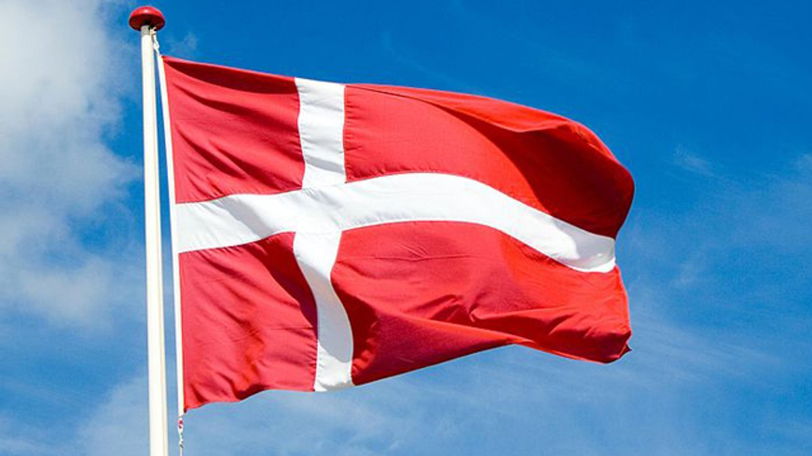

| Полное название: | Королевство Denmark |
|---|---|
| Территория: | 43 094 км2 |
| Столица: | Копенгаген |
| Главные города: | Копенгаген, Орхус, Оденсе, Ольборг |
| Глава государства: | Маргрете II |
| Глава правительства: | Метте Фредериксен |
| Государственный строй: | Kонституционная монархия |
| Денежная единица: | Датская крона |
| Численность населения: | 5 811 413 чел. |
| Естественный прирост: | 0,4% |
| Основные религии: | лютеранство |
| Неграмотность: | 2% |
| ВВП: | 56 444 долл. |
Подавляющее большинство населения Дании (97%) составляют датчане. Почти всё верующее население— лютеране. Определённое беспокойство вызывает низкий естественный прирост, негативно влияющий на возрастную структуру общества, ведущий к его старению. Средняя плотность населения — свыше 120 чел./км2 , самая высокая — в крупных городах: Копенгагене
Первые люди, жившие на территории современной Дании около 12 тыс. лет тому назад, занимались рыболовством и охотой, и лишь спустя века распространилось земледелие и скотоводство. Примерно за 1000 лет до н. э. на датских равнинах обосновались германские, а позднее скандинавские племена. В X веке первый датский король Горм Старый ввёл христианство и объединил страну. Со второй половины XII века развернулась энергичная военная экспансия датчан в Балтийском регионе. В XIV веке Denmark, заключившая персональную унию со Швецией и Норвегией, стала ведущей державой Северной Европы. В 1536 г., после гражданской войны, страна перешла на новую веру — лютеранство. На протяжении XVI—XIX вв. Denmark теряла былое могущество, а в 1849 г. стала конституционной монархией. В годы I мировой войны Denmark придерживалась нейтралитета, а во время II мировой пережила нацистскую оккупацию. После войны страна стала членом ООН, НАТО и ЕС.
В Дании имеются незначительные залежи полезных ископаемых, в том (тут проживает 26% жителей числе месторождения нефти и придании), Орхусе, Оденсе и Ольборге. родного газа (примерно 70-80 млн м3 ) на континентальном шельфе Северного моря, а также бурого угля. Большую часть сырья и энергоресурсов страна импортирует. На экспорт же идёт сельскохозяйственная продукция очень высокого качества. Хорошо развиты традиционные отрасли: пищевая (мясная, рыбная, плодоовощная, пивоваренная), судостроение, машиностроение (сельскохозяйственная техника), химическая (производство минеральных удобрений), керамическая, нефтехимическая, цементная, мебельная и электронная. Хотя ведущую роль в производстве ВВП играет промышленность, аграрный сектор превосходно развит и традиционно считается одним из самых передовых в Европе. Главные его достоинства — высокие продуктивность и уровень механизации. Примерно на половине посевных площадей выращиваются зерновые (ячмень, пшеница, рожь, овёс), сахарная свекла и картофель. Процве тает разведение крупного рогатого скота, евино- и птицеводство. Большое экономическое значение имеет рыболовство.
Выгодное географическое положение Дании на перекрёстке торговых путей из Скандинавии в Центральную Европу стало причиной того, что через страну пролегли транзитные потоки. Попасть из Дании в Швецию очень легко — Ютландия и Скандинавия соединены множеством паромных переправ и мостов, однако мост-туннель «Эресуннлинк» радикально изменил привычную схему контактов через пролив. Транспортная магистраль между Копенгагеном и Мальмё длиной 17 км состоит на трёх участков: подводного туннеля (4 км), насыпного острова Пеберхольм и восьмикилометрового моста. Большое значение в грузовых перевозках попрежнему играет морской транспорт, а многочисленные паромы и катера доставляют пассажиров с континента на острова и в соседние страны. Копенгаген — крупнейший торгово-транспортный узел страны. Столичный аэропорт Каструп ежедневно обслуживает около 435 международных рейсов.
Больше всего туристов привлекает крупнейший остров страны — Зеландия, лежащий на оживлённом морском пути из Балтийского моря в Северное. На его восточном побережье расположена столица Дании — Копенгаген. Одна из главных достопримечательное- ' ' тей города — королевский дворец Амалиенборг, возведённый в стиле рококо (конец XVIII века). Гордостью кафедрального собора Фор-Фру-Кирке является знаменитая скульптура Торвальдсена «Христос и двенадцать апостолов», а церковь Фор-Фреслерс-Кирке в районе Кристиансхавн знаменита своим прекрасным барочным алтарём и резным органом. Особого внимания заслуживает здание биржи, Государственный художественный музей и Национальный музей. Массу развлечений предлагает основанный в 1843 г. парк аттракционов Тиволи. Юные туристы с удовольствием посещают парк Леголенд, раскинувшийся на территории 10 га близ города Биллунд. Все его сооружения (города и сёла, старинные замки, аэродромы, парк сафари и т. д.) составлены из 42 млн. пластиковых элементов детского конструктора «Лего», изобретённого 100 лет назад местным столяром. Главная достопримечательность Орхуса — Ден-Гамле-Бю (Старый город), представляющий собой музей под открытым небом, в котором со всей страны собрано более 75 домов (их возраст превышает 400 лет). Узкие улочки Старого города вьются вокруг самого большого в Дании кафедрального собора св. Климента с его знаменитым органом. Храм возведён в готическом стиле, при нём сохранилась романская часовня XII века. В городском Музее предыстории («Мосгард») хранятся останки «человека из Граубалле», найденные в близлежащем торфянике в 1952 г. и хорошо сохранившиеся, несмотря на весьма почтенный возраст (ок. 2000 лет). В расположенном на севере Дании курортном посёлке Скаген можно увидеть белоснежную колокольню средневековой церкви Ден Тилсандеде-Кирке («Захороненная церковь»)— всё, что осталось от погребённой под дюнами деревушки. В 1795 г. церковь пришлось закрыть, когда весь её первый этаж скрылся под толщей песчаных наносов. Тем же, кто мечтает о безмятежном отдыхе вдали от городского шума, Denmark предлагает тихую рыбалку на бесчисленных реках и озёрах, в которых в изобилии водятся лещ, форель, плотва, щука. На островке Кристиансё, лежащем в часе пути от острова Борнхольм, находится прекрасно сохранившийся замок XVII века. Весь островок является заповедной территорией, а 140 его жителей прекрасно обходятся без автомашин и современных домов, тут не увидишь ни кошек, ни собак. На соседний островок Фредериксё можно пройти по пешеходному мосту, переброшенному над живописным проливом. Данию без преувеличения называют «страной велосипедистов» — этим видом активного отдыха здесь увлекаются все поголовно. По стране проложена густая сеть прекрасных велосипедных трасс, самая протяжённая из которых (500 км) тянется вдоль побережья от границы с ФРГ до Скагена. В Дании много удобных мест для занятий виндсёрфингом — как в открытом море, так и в бесчисленных тихих фьордах и бухтах, где среди дюн прячутся уютные песчаные пляжи.
Атлантике Гренландия, а также Фарерские острова (Норвежское море). Обе территории — автономны, а Фарерские острова с населением около 50 тыс. чел. имеют даже своё правительство, парламент и денежную единицу — фарерскую крону. Основное занятие местных жителей — рыболовство. Гренландия по площади более чем в 50 раз превосходит Данию, а её население (около 59 тыс. чел.) состоит из иннуитов (эскимосов), гренландцев и датчан.